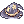
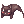

Headgear Recolor Guide
In NovaRO, there're many headgears that are able to be recolored. Here you can find a rundown on how to.
Mysterious Dyestuffs

Most recolors will ask for an item called Mysterious Dyestuffs. Monkey can craft them using assorted dyestuffs.
He can be found monkey-ing around at the Third Floor of the Main Office.
| Image | Name | Ingredients |
|---|---|---|
3  Mysterious Dyestuffs Mysterious Dyestuffs
|


There's also an NPC called Retired Artist at a house in southwest Prontera /navi prontera 78/104 that can also craft Mysterious Dyestuffs.
The Milliners
A group of hat enthusiast catgirls that are the go-to when the matter is headgear recoloring. They can all be found hanging around the Third Floor of the Main Office.
More information about which hats they specialize on can be found on their personal wiki pages.


Summer Festival Painter
Located inside the Summer Festival, but also on the Third Floor of the Main Office, he specializes in Summer Festival headgears.
The full list of recolors can be found on his own wiki page.
Alora Recolors
Alora is in the room to the right of the Retired Artist, in the same Prontera building.
You also have the option to recolor an already recolored headgear if you don't like the color, but it'll cost you another dyestuff. The Ribbon and the Majestic Goat must be the unslotted variations. You are unable to slot the Ribbon and Evolved Majestic Goat item through any means on NovaRO.
| Name | Basic Ingredients | Possible Results |
|---|---|---|
| Mysterious Dyestuffs
|
Yellow Mage Hat
 Blue Mage Hat | |

|
Mysterious Dyestuffs
|
Blue Beanie |
| Mysterious Dyestuffs
 Drooping Cat (quest) |
Blue Drooping Cat | |
| Mysterious Dyestuffs
|
||
| Mysterious Dyestuffs
|
||
| Mysterious Dyestuffs
|
||
| Mysterious Dyestuffs
|